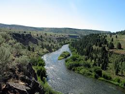
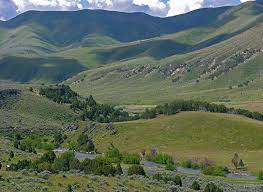
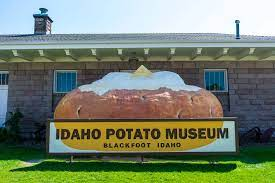
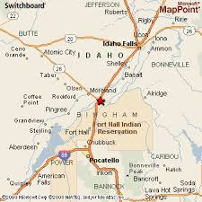

Blackfoot, Idaho
The Potato Capital of the World
Population
The population of Blackfoot is 11,907 as of the 2019 United States Census.
Blackfoot is a city in Bingham County, Idaho. The city is the county seat of Bingham County. Blackfoot boasts the largest potato industry in any one area, and is known as the "Potato Capital of the World." It is the site of the Idaho Potato Museum (a museum and gift shop that displays and explains the history of Idaho's potato industry), and the home of the world's largest baked potato and potato chip. Blackfoot is also the location of the Eastern Idaho State Fair, which operates between Labor Day weekend and the following weekend.
History
Frederick S. Stevens and Joe Warren were the first permanent white settlers of record in Bingham County. In 1866, Stevens and Warren filed claims in the Snake River Valley near the present-day location of Blackfoot, where they started farming and ranching. The area was a flat, expansive plain of sagebrush frequented by Indians. To create a place of safety for the scattered settlers when they feared Indian trouble, Mr. Warren outfitted his cabin with holes between the logs where men could stand guard, day or night, until the natives left the neighborhood. When the Utah and Northern Railway signed contracts to expand north into Idaho in the 1870s, some of the settlers laid out a town on the Shilling and Lewis homesteads. The planned town, named Blackfoot, which was what the area had been called by fur traders, was near the Corbett stage station, about a mile from the Snake River, and two miles from the Blackfoot River.
